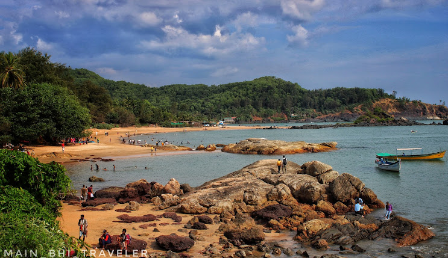
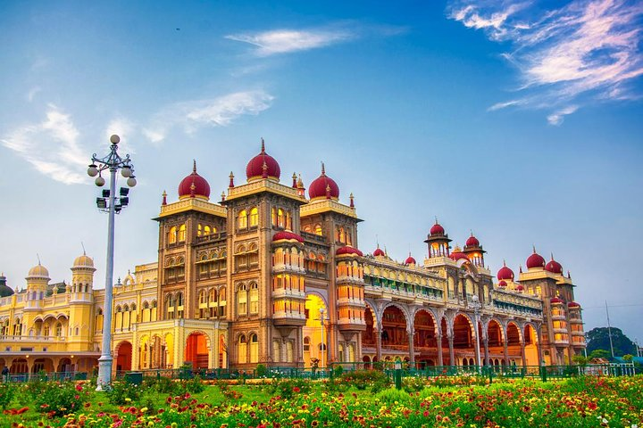
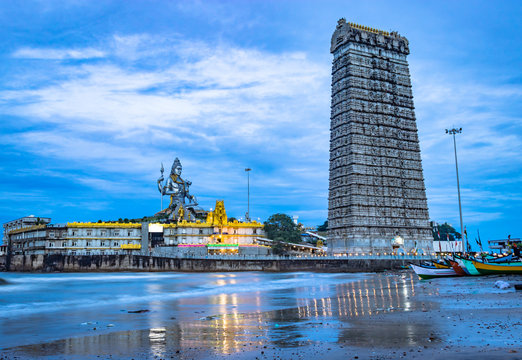
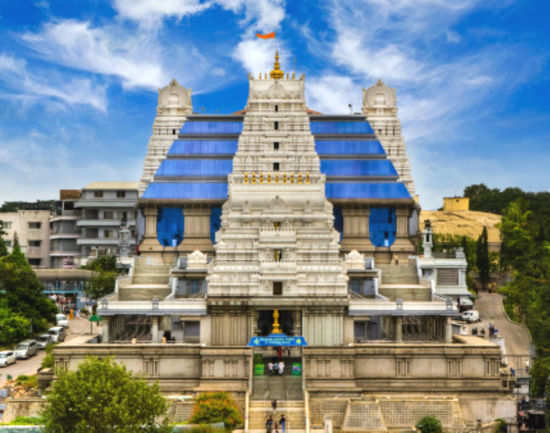

Gokarna
Gokarna is a town on the Arabian Sea, in the southwestern Indian state of Karnataka. A popular pilgrimage destination for Hindus, it’s known for sacred sites like Mahabaleshwar Temple, which has a shrine dedicated to the deity Shiva. Nearby, Koti Teertha is a temple tank where devotees wash in the holy waters. The town is also home to beaches such as palm-lined Gokarna, in the center, plus Kudle and Om farther south.
click here

Tipu Sultan's Palace
An iconic palace with ornate architecture, showcasing the history of Tipu Sultan.
click here

Murdeshwar Shiva Temple
Murdeshwar is a town in Uttara Kannada district in the state of Karnataka, India, It is famous for the world's second tallest Shiva statue, the town lies on the coast of the Laccadive Sea and is also famous for the Murudeshwara Temple. The town has a railway station on the Mangalore–Mumbai Konkan railway route
click here

Bangalore Palace
A grand palace with stunning architecture, reminiscent of medieval European castles.
click here

ISKCON Temple
An architectural marvel and a spiritual center dedicated to Lord Krishna.
click here

Nandi Hills
Nandi Hills, or Nandidurg, is a hill fortress in the south Indian state of Karnataka. Tipu Sultan Fort, a summer retreat of the namesake 18th-century ruler, features stone carvings and wall paintings. Prisoners are said to have been thrown to their death from Tipu’s Drop, now known for its panoramic views. Local Hindu temples include the hilltop Yoga Nandeeshwara Temple, guarded by a huge statue of a bull (nandi)
click here